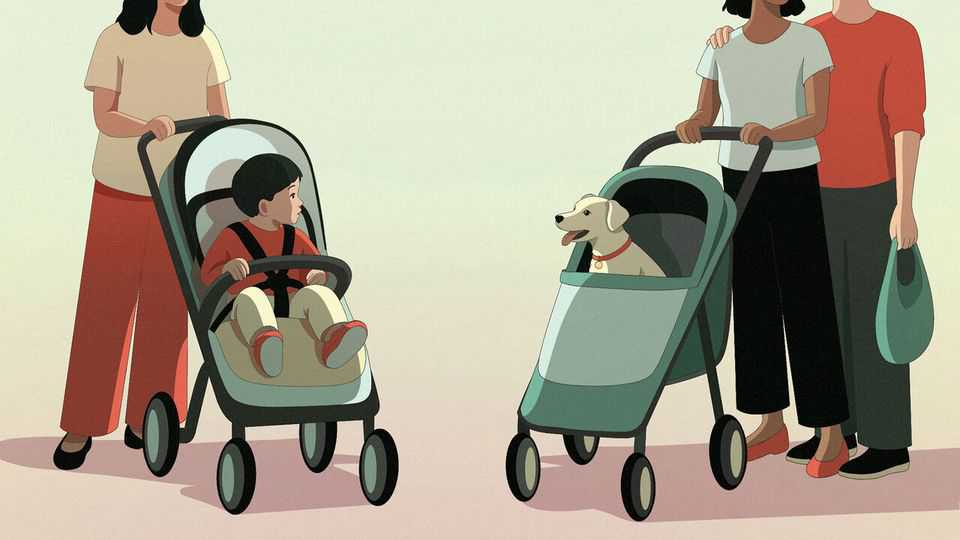

Is childlessness contagious?
A new book offers some surprising reasons people aren’t having children

Nov 5th 2026
IT’S ALL gone to the dogs. In South Korea sales of buggies for pets have overtaken those for children. Shrines in Japan sometimes bless more canines than babies. Conventional wisdom once held that when a couple got a puppy, they would start to conceive of parenthood—and then start trying to conceive. But a growing number of pet “parents” see four-legged creatures as a permanent substitute for two-legged offspring. Some firms have begun to offer “pawternity” leave, so employees can bond with a new pet or tend to it when it is sick.
Some find nothing cute or cuddly about the trend. Pope Francis warned about a “demographic winter” and frostily decried the choice not to have children as “selfish”. Elon Musk has said falling birth rates are the “biggest danger civilisation faces by far”. The largest 15 countries by GDP are now all below the population replacement rate, including America, China and India. Declining birth rates could cause the world’s population to shrink later this century for the first time since the Black Death killed tens of millions in the 14th century.
Baroness Camilla Cavendish, a columnist for the Financial Times, gives those delaying or forgoing children a name: Generation Maybe. In a fascinating new book, she examines why “what we once thought of as the most profound human instinct, to continue the line, is on the wane.”
The consequences of the baby bust are intuitive: ageing societies will have to rely on a smaller group of youngsters to fuel growth and fund pensions and public services. They are also enormous. Falling birth rates will reshape culture, society and geopolitics. By 2050 Nigeria will overtake America as the third-most-populous country, according to some projections (though such estimates are hotly debated). Low-growth nations could invade one another to expand their numbers and distract from tensions and anxiety at home, Lady Cavendish suggests. She predicts the world will become less peaceful and probably more religious, as “a greater proportion of the planet will live in countries with predominantly Islamic or Christian populations.”
And as more people choose to have just one child, it has sparked a “kin crash” of fewer siblings and other relatives. Fifty years ago the average Canadian 35-year-old would have had 20 living cousins. Today she has about ten, and in 2095 she may have only five. By the end of the century there will be a 38% global drop in the number of living relatives for people aged 65 compared with 1950, according to a study published by America’s National Academy of Sciences. The Beatles’ sombre chorus about “all the lonely people” may be what the future has in store.
What is behind this reverse baby fever? Affordability and housing costs get a lot of attention. Fewer people want to have a baby when they feel like a grown-up child, stuck living with their own parents. One study by Benjamin Couillard at the University of Toronto estimates that about half the recent decline in birth rates in America may be due to housing prices, and that around 13m more children would have been born from 1990 to 2020 if those costs had remained stable. Yet fertility has fallen sharply even in countries where housing is not especially expensive, including Japan.
Opportunity costs may be a bigger factor. Children demand a huge amount of time. As countries grow richer, the alternative uses for that time grow more attractive. And many parents think they have a better shot at winning the educational arms race if they shower Mandarin and violin lessons on one or two kids, rather than stretching their resources over three or four. Academics call this “intensive” parenting; others invoke analogies to helicopters and tigers.
“Social contagion” influences people’s opinions about whether to bear children and how many to have, Lady Cavendish intriguingly argues. TikTok videos exalt the gloriously #Childfree life, which apparently includes mid-afternoon naps, bucket-list travel, big savings and early retirement. (Sorry, exhausted parents, but it’s too late for second thoughts.) Research has shown TV shows, including MTV’s “16 and Pregnant” and Brazil’s telenovelas that feature small (albeit dysfunctional) families, have contributed to falling fertility rates. A growing body of “misery memoirs”, which complain about how hard parenthood and marriage are, acts as a prophylactic, too.
Friends and siblings can strongly influence how many children someone wants. Polish women who move to Britain, for instance, have more babies than their peers back home, “mirroring the household average of their new country, even though it often costs more to raise a child in London than in Warsaw”, Lady Cavendish writes.
Those who think they may like children but are waiting—for the right partner, the right moment, the right bank balance—may be wrongly guided. Lady Cavendish is searing about IVF and egg-freezing; clinics give women a rosier view of their prospect of parenthood than data support. The success rate for frozen embryos varies widely and depends on a woman’s age, but the national average in Britain is under 30%.
Men also face little-discussed problems as they get older. A “spermapocalypse” is quietly occurring, with men’s sperm count having fallen precipitously in many countries, possibly because of exposure to household products. Age degrades sperm quality, too, though even those alert to a ticking biological clock do not always factor in males’ fertility decline.
What can be done to baby-proof the baby bust? Immigration can help, but is often unpopular, and many countries are becoming less welcoming. Efforts to persuade people to have more babies have met little or no success. Campaigns are more likely to vitiate than titillate. Take the “Do it for Denmark” TV adverts (encouraging couples to go on holiday and send proof of conception to win prizes) or a rap in Singapore (“I’m a patriotic husband, you’re my patriotic wife, let’s do our civic duty and manufacture life!”).
Lady Cavendish runs through 11 less cringe-inducing ideas to boost baby-making, which span the sensible (teach both sexes more about the biological clock) to the improbable (rethink the whole education system so people can start families sooner). Some are no-brainers, like trying to make procreation less political and polarising. Other suggestions are brainteasers: for example, should families with children be entitled to more votes? Paul Demeny, a late demographer and economist, proposed that parents should be given a proxy vote for each of their children. This could help counteract older voters’ obvious self-interest in investing more in health care and less in education. But it seems like an unlikely political mantle.
Ultimately child-bearing is a personal choice with public consequences. The pressing question is whether Generation Maybe will become Generation No. For that, demographers and authors will have to wait for the next chapter. ■